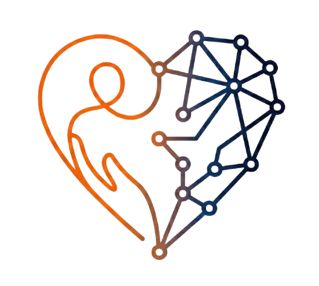

12 vragen om te beslissen op feiten in plaats van enthousiasme.
Gebruik deze lijst twee keer: vóór de pilot (mag het beginnen?) en na de pilot (doorgaan, bijsturen of stoppen?). Vul hem in met de opdrachtgever en de projectmanager, niet alleen met het projectteam dat er al energie in heeft gestoken.
| 1 | Kunnen we in één zin zeggen welk probleem we oplossen, en voor wie? | ☐ Ja ☐ Nee ☐ ? |
| 2 | Hebben we gemeten hoeveel dat probleem nu kost (uren, fouten, geld)? | ☐ Ja ☐ Nee ☐ ? |
| 3 | Is vastgelegd wat "gelukt" betekent, in cijfers? | ☐ Ja ☐ Nee ☐ ? |
| 4 | Is er een eigenaar met mandaat én tijd? | ☐ Ja ☐ Nee ☐ ? |
| 5 | Hebben mensen van de werkvloer meegedacht over het probleem en de oplossing? | ☐ Ja ☐ Nee ☐ ? |
| 6 | Weten we waar de weerstand zit en waarom? | ☐ Ja ☐ Nee ☐ ? |
| 7 | Is duidelijk welke gegevens worden gebruikt, en is er een verwerkersovereenkomst? | ☐ Ja ☐ Nee ☐ ? |
| 8 | Is een DPIA nodig, en is die gedaan of gepland (met de functionaris gegevensbescherming)? | ☐ Ja ☐ Nee ☐ ? |
| 9 | Is bepaald welke uitkomsten altijd door een mens worden gecontroleerd? | ☐ Ja ☐ Nee ☐ ? |
| 10 | Is budget gereserveerd voor beheer ná de pilot, niet alleen voor de bouw? | ☐ Ja ☐ Nee ☐ ? |
| 11 | Is bepaald wie het resultaat gaat beheren? | ☐ Ja ☐ Nee ☐ ? |
| 12 | Weten we vooraf bij welk resultaat we stoppen? | ☐ Ja ☐ Nee ☐ ? |
Nee of "?" op vraag 1 tot en met 4: nog niet starten. Dit is geen detail, dit is het fundament.
Meer dan drie keer nee of "?" in totaal: eerst herstellen, dan pas beslissen.
Alles ja, of maximaal twee keer nee: starten, en de resterende punten in de eerste weken oplossen.
| 13 | Halen we het succescriterium uit vraag 3, vergeleken met de nulmeting uit vraag 2? | ☐ Ja ☐ Nee |
| 14 | Wat zijn de ervaringen van gebruikers, ook van de sceptische collega's? | ☐ Positief ☐ Gemengd ☐ Negatief |
| 15 | Kost de menselijke controle minder tijd dan de winst oplevert? | ☐ Ja ☐ Nee |
| 16 | Wat kost productie structureel (beheer, scholing, licenties) en is dat gedekt? | ☐ Ja ☐ Nee |
Stoppen is een geldige uitkomst, mits je het vooraf zo hebt afgesproken. Meer over het besluit: weareimpact.nl/kennisbank/wanneer-stop-je-een-ai-project · Hulp nodig? weareimpact.nl/ai-projectmanager